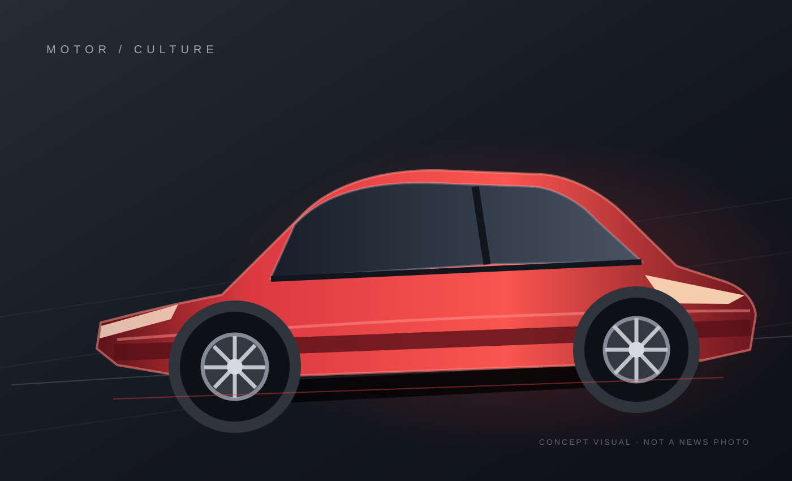
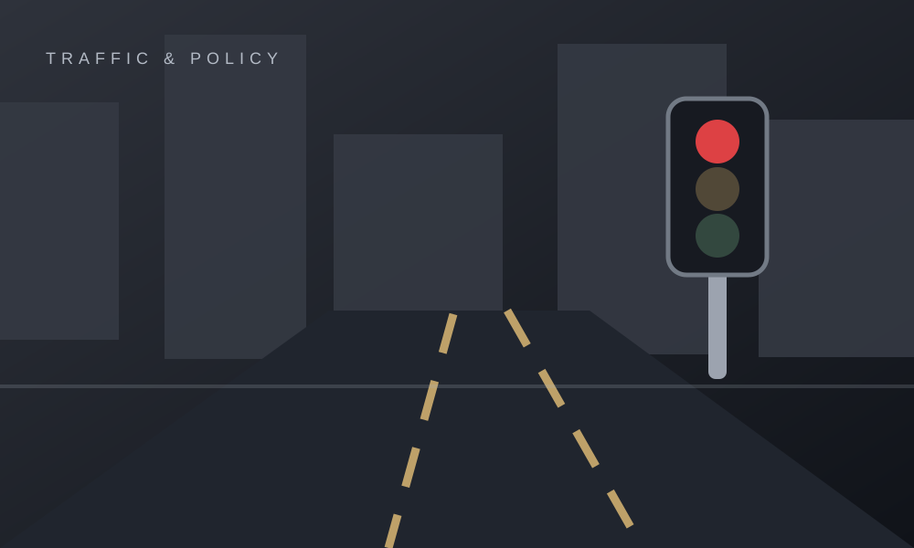
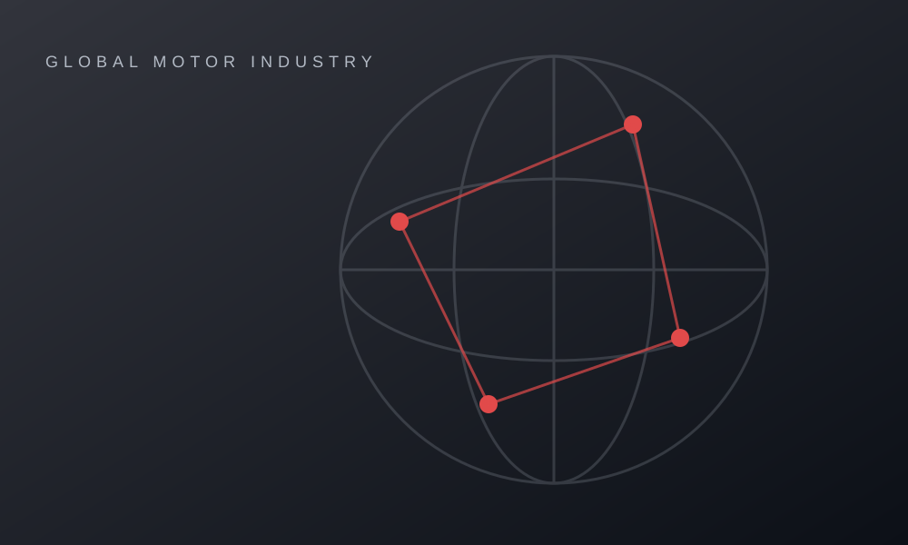
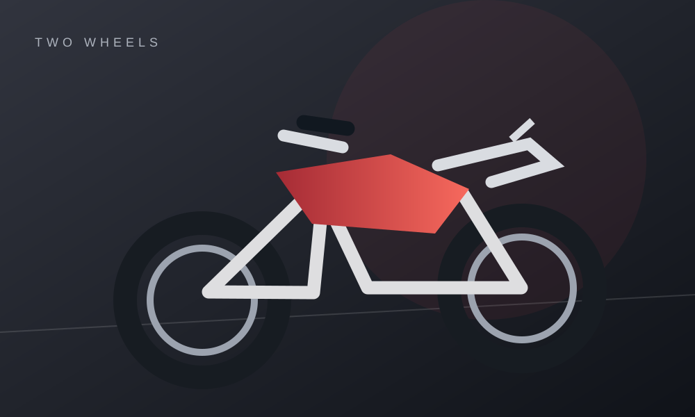

台灣交通新制該怎麼看？先確認公告與施行日期
政策預告、法規修正與正式上路不是同一件事。閱讀交通新聞，應先分辨目前進度。
閱讀文章
從台灣新車、機車文化到交通政策，連結全球汽車產業的重要時刻。

新車全球首發與台灣正式販售可能相隔很久，建議分開核對價格、動力及上市時間。

交通法規政策預告、法規修正與正式上路不是同一件事。閱讀交通新聞，應先分辨目前進度。
新車全球首發與台灣正式販售可能相隔很久，建議分開核對價格、動力及上市時間。

全球車壇從車企合作、電動車產品到召回事件，先區分全球公告與台灣實際適用情況。

機車專區速克達、檔車與大型重機各有產品重點；不同年式的配備和價格也可能不同。
我們優先使用可查證的新聞來源，區分政策草案與正式施行；缺乏資料時寧可短一點，也不憑空補寫內容。